|
Naveen K Uppalapati
I am Chief Scientist at
EarthSense,
where I work on autonomous robotic systems for agricultural sensing and field operations.
Previously, I was a Research Scientist at the
National Center for Supercomputing Applications (NCSA)
at the University of Illinois Urbana-Champaign, and served as Executive Director of the
Farm of the Future testbed.
|
{kind=link}
ResearchMy research focuses on the design, modeling, and control of robotic systems for unstructured real-world environments, with an emphasis on agricultural applications. On the hardware side, I develop soft and hybrid rigid-soft manipulators that combine the compliance and dexterity of continuum arms with the payload capacity of rigid links, enabling safe and precise interaction with delicate crops in cluttered canopy environments. On the autonomy side, I work on vision-guided planning and control, including visual servoing, semantic mapping, and learning-based controllers that generalize to unseen environments. I am also interested in full-stack field robotics -- integrating perception, manipulation, and mobility on platforms that operate reliably in GPS-denied, high-variability outdoor settings such as high tunnels and orchards. |

|
Visual-Language-Guided Task Planning for Horticultural Robots
Jose Cuaran, Kendall Koe, Aditya Potnis, Naveen Kumar Uppalapati, Girish Chowdhary Computers and Electronics in Agriculture, 2026 arXiv / project page / journal A modular VLM-guided framework for robotic crop monitoring that interleaves vision-language queries with action primitives across RGB feeds and 2D semantic occupancy maps; benchmarked on short- and long-horizon tasks in monoculture and polyculture environments, revealing key limitations of VLMs under noisy semantic context. |
|
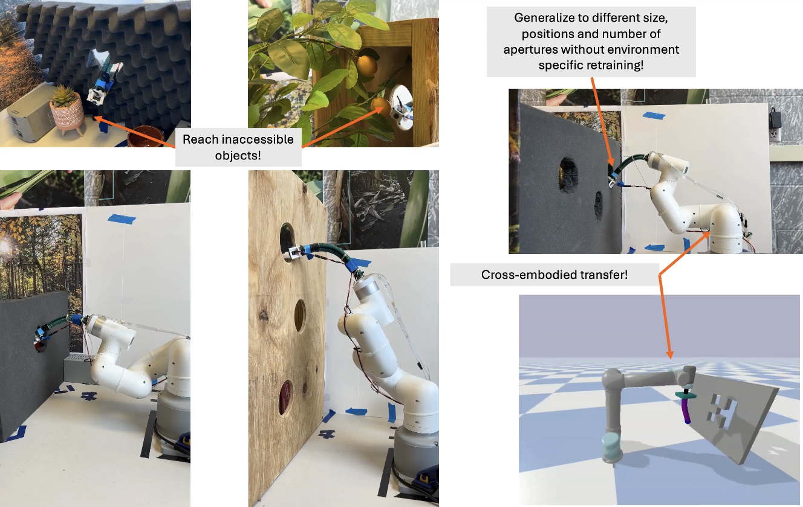 |
THREAD: Trajectory Planning for Hybrid Rigid-Soft Manipulators with Environment-Aware Diffusion
Shivani Kamtikar, Pranav Asthana, Naveen Kumar Uppalapati, Girish Krishnan, Girish Chowdhary arXiv preprint, 2026 arXiv / project page THREAD is the first diffusion-based trajectory planner for hybrid rigid-soft manipulators, learning a generative prior over physically realizable backbone trajectories conditioned on local environment geometry with physics-inspired losses for curvature, smoothness, and collision. Achieves 92.4% task success with 5x fewer collisions than baselines and transfers to real hardware threading through apertures as small as 1.3x the soft segment diameter. |
|
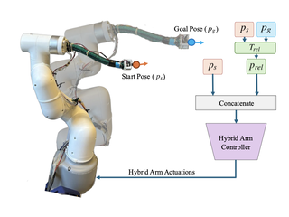 |
HyReach: Vision-Guided Hybrid Manipulator Reaching in Unseen Cluttered Environments
Shivani Kamtikar, Kendall Koe, Justin Wasserman, Samhita Marri, Benjamin Walt, Naveen Kumar Uppalapati, Girish Krishnan, Girish Chowdhary Soft Robotics, 2026 (Accepted) arXiv HyReach uses vision-guided planning to enable a hybrid rigid-soft manipulator to reach targets in previously unseen cluttered environments, generalizing across obstacle configurations without environment-specific retraining. |
|
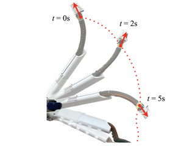 |
Learning-Based Position and Orientation Control of a Hybrid Rigid-Soft Arm Manipulator
Kendall Koe, Samhita Marri, Benjamin Walt, Shivani Kamtikar, Naveen Kumar Uppalapati, Girish Krishnan, Girish Chowdhary Journal of Mechanisms and Robotics (JMR), 2025 paper A data-driven controller jointly manages the rigid and soft degrees of freedom of a hybrid manipulator, learning arm dynamics at 4 Hz and using expert trajectory data to train a policy for simultaneous position and orientation control. |
|
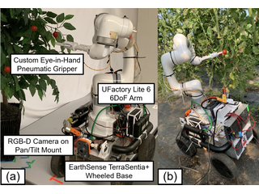 |
Precision Harvesting in Cluttered Environments: Integrating End Effector Design with Dual Camera Perception
Kendall Koe, Poojan Kalpeshbhai Shah, Benjamin Walt, Jordan Westphal, Samhita Marri, Shivani Kamtikar, James Seungbum Nam, Naveen Kumar Uppalapati, Girish Chowdhary, Girish Krishnan IEEE International Conference on Robotics and Automation (ICRA), 2025 paper A precision harvesting system co-designs a compliant end effector with a dual-camera perception pipeline to localize and pick fruit in heavily occluded, cluttered canopy environments. |
|
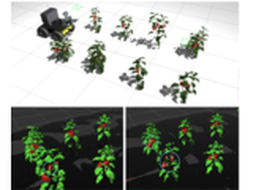 |
Active Semantic Mapping with Mobile Manipulator in Horticultural Environments
Jose Cuaran, Kulbir Singh Ahluwalia, Kendall Koe, Naveen Kumar Uppalapati, Girish Chowdhary IEEE International Conference on Robotics and Automation (ICRA), 2025 paper An active semantic mapping system enables a mobile manipulator to autonomously build fruit-annotated 3D maps of greenhouses, combining next-best-view planning with semantic segmentation for precision agriculture. |
|
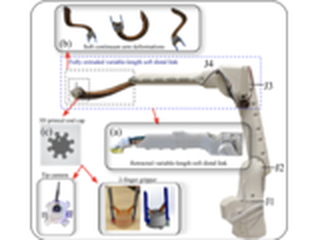 |
Engaging Healthcare Providers to Design a Robot for Telehealth
Travis Kadylak, Naveen Uppalapati, Asif Huq, Girish Krishnan, Wendy A. Rogers Ergonomics in Design, 2025 paper A participatory design study with healthcare providers establishes functional and ergonomic requirements for a telehealth robot, informing design decisions for safe and effective remote patient care. |
|
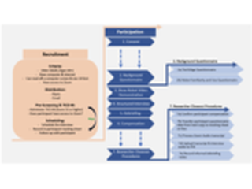 |
Understanding Older Adults' Perceptions and Attitudes Towards a Telehealth Robot
Samuel A. Olatunji, Husna Hussaini, Naveen K. Uppalapati, Girish Krishnan, Wendy A. Rogers Gerontechnology, 2024 paper A user study with older adults investigates perceptions and attitudes toward a morphologically adaptive telehealth robot, revealing key factors affecting trust, usability, and willingness to adopt robotic systems in home healthcare. |
|
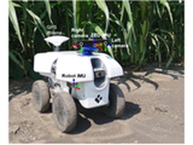 |
Under-Canopy Dataset for Advancing Simultaneous Localization and Mapping in Agricultural Robotics
Jose Cuaran, Andres Eduardo Baquero Velasquez, Mateus Valverde Gasparino, Naveen Kumar Uppalapati, Arun Narenthiran Sivakumar, Justin Wasserman, Muhammad Huzaifa, Sarita Adve, Girish Chowdhary The International Journal of Robotics Research (IJRR), 2024 paper A large-scale dataset collected under crop canopies with diverse sensor modalities for benchmarking SLAM algorithms in GPS-denied agricultural environments, addressing unique challenges of dense vegetation and repetitive structure. |
|
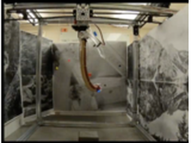 |
Visual Servoing for Pose Control of Soft Continuum Arm in a Structured Environment
Shivani Kamtikar, Samhita Marri, Benjamin Walt, Naveen Kumar Uppalapati, Girish Krishnan, Girish Chowdhary IEEE Robotics and Automation Letters (RA-L), 2022 paper A visual servoing controller achieves closed-loop pose control of a soft continuum arm using RGB camera feedback, enabling reliable tracking of end-effector position and orientation in structured agricultural environments. |
|
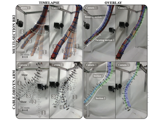 |
A Physics-Informed, Vision-Based Method to Reconstruct All Deformation Modes in Slender Bodies
Seung Hyun Kim, Heng-Sheng Chang, Chia-Hsien Shih, Naveen Kumar Uppalapati, Udit Halder, Girish Krishnan, Prashant G. Mehta, Mattia Gazzola IEEE International Conference on Robotics and Automation (ICRA), 2022 paper A physics-informed vision pipeline reconstructs the full 3D deformation of slender soft bodies -- including bending, twisting, and extension -- from camera images alone, using Cosserat rod mechanics as a prior. |
|
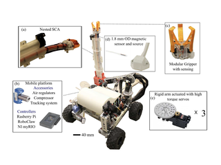 |
A Berry Picking Robot With A Hybrid Soft-Rigid Arm: Design and Task Space Control
Naveen Kumar Uppalapati, Benjamin Walt, Aaron J. Havens, Armeen Mahdian, Girish Chowdhary, Girish Krishnan Robotics: Science and Systems (RSS), 2020 project page / PDF A hybrid rigid-soft robotic arm for berry harvesting combines a rigid link for gross positioning with an extendable soft manipulator for fine navigation; a magnetic sensor and RL-based controller achieve reliable end-effector control in cluttered plant environments. |
|
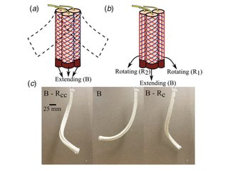 |
Design and Modeling of Soft Continuum Manipulators Using Parallel Asymmetric Combination of Fiber-Reinforced Elastomers
Naveen Kumar Uppalapati, Girish Krishnan Journal of Mechanisms and Robotics (JMR), 2021 paper A design and modeling framework for soft continuum manipulators built from parallel asymmetric fiber-reinforced elastomer actuators, enabling richer 3D deformation modes through geometric parameter variation. |
|
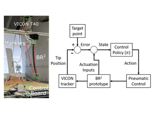 |
Continuous Control of a Soft Continuum Arm Using Deep Reinforcement Learning
Sreeshankar Satheeshbabu, Naveen K. Uppalapati, Tianshi Fu, Girish Krishnan IEEE International Conference on Soft Robotics (RoboSoft), 2020 paper Extends open-loop soft arm control to continuous closed-loop operation using deep RL, enabling real-time trajectory tracking for a pneumatic continuum manipulator across a cluttered workspace. |
|
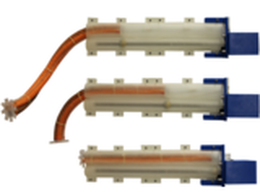 |
VaLeNS: Design of a Novel Variable Length Nested Soft Arm
Naveen Kumar Uppalapati, Girish Krishnan IEEE Robotics and Automation Letters (RA-L), 2020 paper VaLeNS is a variable-length nested soft arm that telescopes rigid and soft segments to achieve a tenfold stiffness modulation and significantly expanded workspace compared to fixed-length designs. |
|
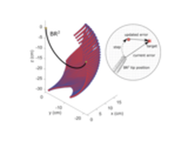 |
Open Loop Position Control of Soft Continuum Arm Using Deep Reinforcement Learning
Sreeshankar Satheeshbabu, Naveen Kumar Uppalapati, Girish Chowdhary, Girish Krishnan IEEE International Conference on Robotics and Automation (ICRA), 2019 paper A deep reinforcement learning policy achieves open-loop 3D position control of a pneumatic soft continuum arm without requiring explicit models, trained entirely in simulation and transferred to hardware. |
|
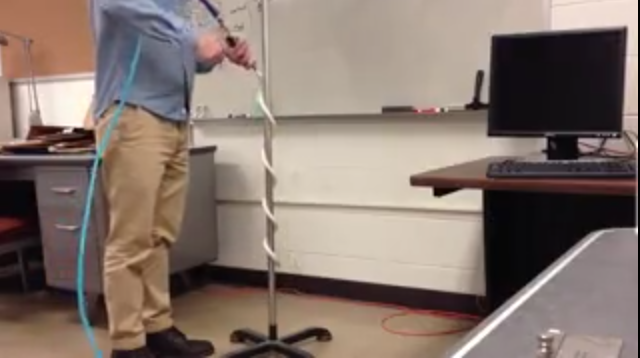 |
Towards Pneumatic Spiral Grippers: Modeling and Design Considerations
Naveen Kumar Uppalapati, Girish Krishnan Soft Robotics, 2018 journal / PubMed Inspired by how climbing plants wrap around objects, this work models spiral pneumatic grippers using helical and Cosserat rod models, enabling systematic design for a range of slender object sizes. |
|
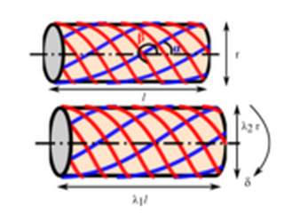 |
Parameter Estimation and Modeling of a Pneumatic Continuum Manipulator with Asymmetric Building Blocks
Naveen Kumar Uppalapati, Gaurav Singh, Girish Krishnan IEEE International Conference on Soft Robotics (RoboSoft), 2018 paper A Cosserat rod model estimates deformation of a pneumatic continuum manipulator from asymmetric fiber-reinforced building blocks, validated against physical experiments with external loads. |
|
Template adapted from Jon Barron source code. |